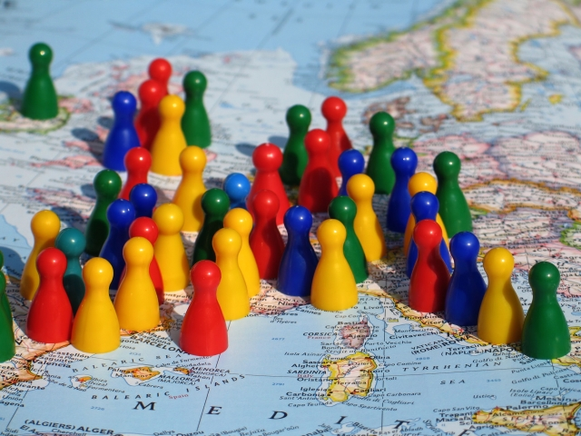

|
Istorie Politică Comunități autonome Mediul înconjurător Economie Demografie Bucătăria spaniolă Seat |
Demografia SpanieiSe poate spune că Spania este compusă din multe nații dar a adoptat cultura castiliană ca să fie cea spaniolă, deși există o creștere a recunoașterii a altor naționalități înăuntrul țării, ca și a celei baște. Patru limbi importante sunt vorbite în Spania, care sunt limbi oficiale în anumite regiuni:
Catalana, galiciana și castiliana, mai comun denumită "spaniolă", sunt descendente ale limbii latine și au propriile lor dialecte; există de asemenea și alte dialecte romanice, ca și asturiana sau Bable în Asturias și părți din León, aragoneza în o parte din Aragón, și araneza (o variantă gascono-occitană) în Val d'Aran la nord-vest de Catalonia. Spaniola vorbită în Americi este descendentă a dialectului spaniol vorbit în sud-vestul Spaniei. Numărul imigranților în Spania a explodat în ultimii zece ani, ajungând de la 500.000 în 1996 la circa 4,5 milioane în 2008, la o populație de 45 de milioane. În această perioadă, țara a cunoscut o creștere economică puternică. |